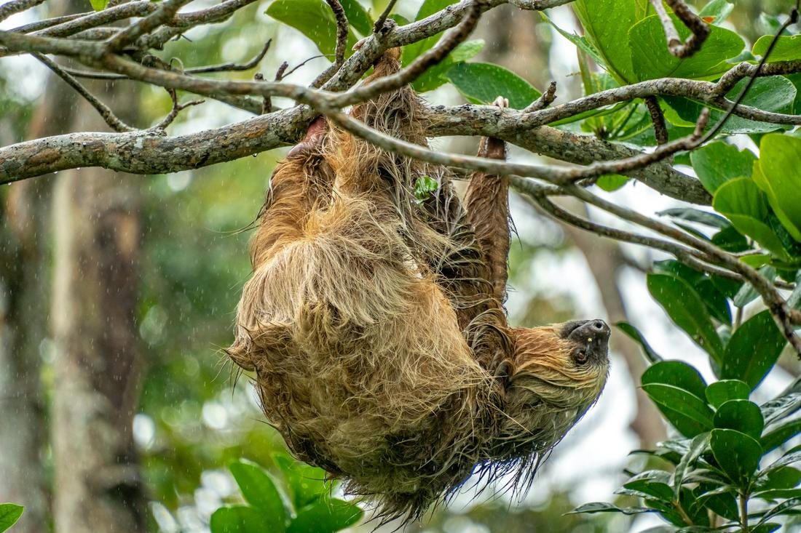
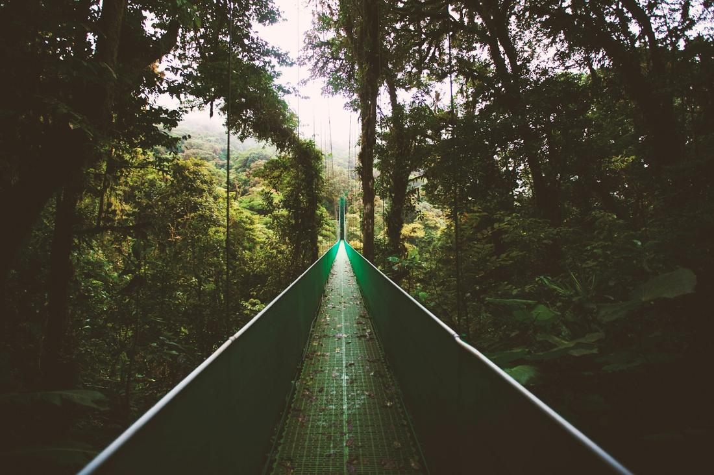

Volcanoes, cloud forests, and two coastlines packed into one impossibly green country.
Costa Rica is the country I recommend most often to clients who say they want adventure but do not want to rough it. It is a small nation, you can drive across most of it in a day, yet it holds close to five percent of the world's biodiversity within its borders. That means volcanoes, cloud forests, rainforest canyons, and two entirely different coastlines are all within reach of a single trip, often in the same week.
The 'pura vida' mindset here is not just a phrase locals say, it genuinely shapes how the country operates, from the eco-lodges built to blend into the jungle canopy to the national parks that protect sloths and scarlet macaws instead of paving over them. Flights from Florida run just a few hours, which makes it one of the easiest big adventures you can book without burning half your vacation on travel days.
Here are three excursions I love arranging for clients heading to Costa Rica.

This is the classic Costa Rica bucket-list day, and I build it around the town of La Fortuna in the shadow of Arenal Volcano, one of the most photogenic volcanic cones in the world rising straight out of the rainforest. I usually start clients on a canopy zipline tour through the treetops, with the volcano visible between cables on a clear day, then move into Arenal Volcano National Park for a walk across the park's swaying hanging bridges suspended high above the jungle floor, where howler monkeys and toucans are a near-guarantee. Midday, we hike out to La Fortuna Waterfall, a genuinely thundering cascade you can swim beneath after descending several hundred stone steps into the canyon. To close the day, nothing beats soaking in mineral-rich hot springs warmed naturally by the volcano itself, whether that is a luxury resort spring or one of the more low-key local pools I can point you toward depending on your budget. For families or first-timers, I will sometimes swap in a horseback ride or ATV tour along the volcanic backroads instead of the zipline. Either way, this is the day that convinces most clients Costa Rica belongs on every future trip list.

If a client tells me they want wildlife and a beach in the same afternoon, I send them to Manuel Antonio, on the Pacific coast, where the national park is famous for packing an outsized amount of biodiversity into a small, walkable footprint. I arrange a morning guided hike through the park's trails, where two-toed and three-toed sloths hang draped in the treetops, white-faced capuchin monkeys move through the canopy in noisy troops, and iguanas sun themselves in plain view along the boardwalks. The trails open right onto some of Costa Rica's most postcard-perfect beach coves, so after the hike guests can swim, snorkel, or just stretch out on the sand for the rest of the day. For an extra layer, I love booking a sunset catamaran cruise along the coastline, where dolphins frequently show up to ride the bow wake, or a quiet kayak paddle through the mangrove estuary at Damas Island for guests who want a slower, more intimate wildlife encounter. This package is a favorite for multi-generational family trips, since grandparents and kids alike can move at their own pace, and everyone leaves with a phone full of sloth photos.

Monteverde is the trip I recommend for clients chasing something a little more otherworldly, a permanently misted cloud forest reserve high in the mountains where the air feels ten degrees cooler and the light filters green through constant fog. I build the day around a walk across the park's suspended hanging bridges, strung high above the canopy so you are level with the treetops instead of looking up at them, and I always build in time for a guided birding walk, since Monteverde is one of the best chances in the country to spot the resplendent quetzal, a genuinely stunning, rainbow-tailed bird that draws birders from all over the world. For clients who want the adrenaline version, I add a zipline tour through the fog-draped canopy, and for those who want the quieter side of the forest, a guided night walk reveals sleeping birds, tree frogs, and the occasional tarantula that stay completely hidden during daylight hours. I like closing the visit with a stop at a hummingbird garden buzzing with a dozen species at once, and a short tour of how local farms grow cloud forest coffee and chocolate. It is a slower, quieter day than Arenal, and that contrast is exactly why I love pairing the two on longer trips.
Prefer to plan together? I'll build your custom package. Already know what you want? Book instantly through my travel portal.